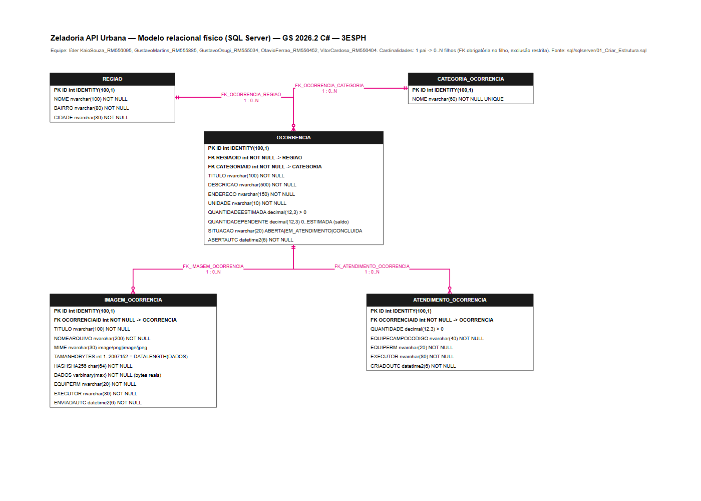
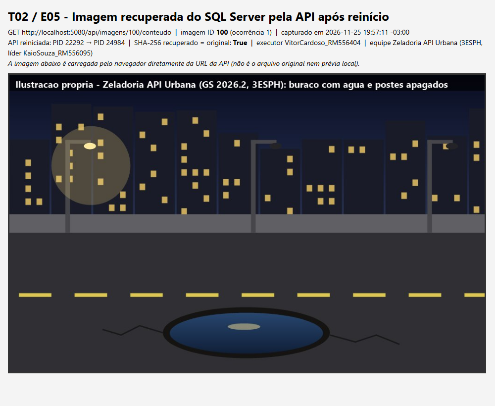

Relatório da equipe (modelo D03 preenchido) · Turma 3ESPH
Professor Angel Antonio Gonzalez Martinez · Uso acadêmico — FIAP — Global Solution 2026.2
CitizenTech: Zeladoria API Urbana. Turma: 3ESPH. Líder e RM: Kaio Drago Lima Souza, RM556095.
Data da execução dos testes: 25/11/2026 (19:56–19:58, horário de Brasília). Nome-base do ZIP/pasta: GS_CSHARP_KaioSouza_RM556095.
Professor: Angel Antonio Gonzalez Martinez.
| Nome completo real | RM | Turma | NomeAluno_RM | Líder |
|---|---|---|---|---|
| Kaio Drago Lima Souza | 556095 | 3ESPH | KaioSouza_RM556095 | sim |
| Gustavo Viega Martins | 555885 | 3ESPH | GustavoMartins_RM555885 | não |
| Gustavo Yuji Osugi | 555034 | 3ESPH | GustavoOsugi_RM555034 | não |
| Otávio Santos de Lima Ferrão | 556452 | 3ESPH | OtavioFerrao_RM556452 | não |
| Vitor Rivas Cardoso | 556404 | 3ESPH | VitorCardoso_RM556404 | não |
Todos os integrantes são da turma 3ESPH e formam a mesma equipe da CitizenTech nas demais disciplinas da GS. A mesma identificação está em
src/CitizenTech.Zeladoria.Api/equipe.json (validado ao iniciar a API e exposto em GET /api/equipe), no README e nos metadados
EQUIPERM/EXECUTOR gravados pela API. Executor das evidências: VitorCardoso_RM556404.
|
Ícone oficial ODS 11 © Nações Unidas |
Cidadão beneficiado: pedestres, moradores e usuários de transporte público que dependem de vias e calçadas seguras, sobretudo no trajeto a pé até o ponto de ônibus à noite. Problema: buracos e postes apagados ficam meses sem reparo; quem abre protocolo não vê o andamento ("só dizem que está em análise"). Território: São Paulo/SP. O recorte piloto é a Mooca (Subprefeitura Mooca); a carga fictícia também tem Vila Mariana. Parceiros/ecossistema: cidadãos e associações de bairro (relatam e acompanham); subprefeitura (triagem e ordem de serviço); equipes de conservação viária e de manutenção da iluminação pública (registram atendimentos); canal oficial de solicitações da Prefeitura (ex.: SP156), como integração futura, não implementada.
ODS principal: 11, Cidades e Comunidades Sustentáveis. Meta 11.2: segurança viária para quem anda a pé ou de moto, já que buraco cheio d'água causa quedas. Meta 11.7: espaços públicos seguros, já que a rua escura gera medo. Secundários: ODS 9.1 (infraestrutura de qualidade e resiliente) e ODS 16.6 (instituições eficazes e transparentes), porque a situação, o pendente e o histórico ficam visíveis ao cidadão.
Papel da imagem: a foto vinculada à ocorrência (tabela IMAGEM_OCORRENCIA) mostra a gravidade (buraco com água, rua escura), ajuda a triagem e a evitar duplicidade, e serve de registro "antes" para conferir o serviço. Nos testes usamos uma ilustração própria da equipe, que reproduz o cenário relatado.
Indicador proposto — PCR30 (% de ocorrências concluídas em até 30 dias). Unidade: % de ocorrências.
Fórmula: (ocorrências abertas no mês M que chegaram a CONCLUIDA em até 30 dias de ABERTAUTC) ÷ (ocorrências abertas no mês M) × 100, por região e categoria.
A data de conclusão é o CRIADOUTC do atendimento que zerou o pendente. Origem futura dos dados: consulta SQL mensal em OCORRENCIA + ATENDIMENTO_OCORRENCIA num piloto com uma subprefeitura. Periodicidade: mensal.
Limitações: não há medição de impacto. Os dados são fictícios, não há integração com o canal oficial e o sistema não avalia a qualidade do reparo. Quantidades em unidades diferentes (m², pontos de luz, m³) não são somadas entre si.
Data e contexto: 14/11/2026, por volta das 14h30, em via pública na Mooca (São Paulo), numa rua com o problema visível: esquina com buraco e quarteirão com postes apagados no trajeto até o ponto de ônibus. Quem ouviu: Vitor Rivas Cardoso.
Perfil anônimo: morador/trabalhador adulto que passa pela rua todos os dias para ir trabalhar. Não registramos nome, contato, áudio nem imagem.
O que ele faz hoje e o que atrapalha: passa pela esquina com um buraco fundo, sem reparo há meses, que enche d'água na chuva e derruba quem não conhece; volta a pé do ponto de ônibus com metade dos postes apagados depois das 19h; já abriu protocolo duas vezes pelo aplicativo e só recebeu "em análise".
Como o relato orientou a solução: as categorias Pavimentação e Iluminação; a foto vinculada à ocorrência; a situação, o pendente e o histórico de atendimentos visíveis, com baixa atômica (resposta direta ao "em análise"); e o indicador de prazo.
Pesquisa em outra disciplina: não utilizada nesta entrega. Registro completo: evidencias/E01_01_Registro_Escuta_Mooca_2026-11-14.md. Limitação: foi uma única conversa, sem valor estatístico.
testes/api.http · Swagger (Development)Onde ficam as coisas: os bytes ficam na coluna DADOS. Os metadados (título, nome, MIME, tamanho, SHA-256, EQUIPERM, EXECUTOR, data) estão nas colunas da mesma linha e saem em JSON por GET /api/imagens/{id}. As regras de negócio ficam nos controllers (validação de entrada e UPDATE condicional) e se repetem como CHECK no banco.
Carga inicial: regiões, categorias e três ocorrências fictícias (02_Carga_Ficticia.sql). Fluxos implementados: consulta do domínio, registro de ocorrência, upload e recuperação da imagem, e registro transacional de atendimento.
POC Windows Forms: não utilizada. Cliente HTTP: console C# próprio + curl + arquivo .http.
A API é avaliável de forma independente, sem VMs, SSH ou agentes de outras disciplinas, sem serviço pago e sem IA na aplicação.
| Item | Versão/configuração efetiva | Evidência |
|---|---|---|
| Windows/IDE | Windows 11 Home 10.0.26300 (64 bits); .NET CLI + PowerShell 5.1 na execução; Visual Studio no projeto original do líder | evidencias/E02_01_Ambiente_Versoes.txt |
| SDK/TargetFramework | .NET SDK 10.0.404; runtime 10.0.15; net10.0 | E02_01 |
| EF Core/provider | Microsoft.EntityFrameworkCore.SqlServer 10.0.15 | E02_01 (dotnet list package) |
| Banco e versão | MS SQL Server 2022 Express LocalDB 16.0.1000.6 (RTM) | E02_02_SQL_00_Verificar_Ambiente.txt |
| Servidor/instância | (localdb)\MSSQLLocalDB, banco GS_CSHARP_ZELADORIA, autenticação Windows (sem senha) | E02_02 |
| Modelagem e HTTP | diagrams.net (web); cliente C# próprio; curl 8.23.0; Microsoft Edge (exibição da imagem) | E03_04, E02_01 |
Build realmente executado em 25/11/2026: dotnet build src\CitizenTech.Zeladoria.slnx terminou com 0 avisos e 0 erros, e dotnet test aprovou 11 de 11 (E02_03).
Conexão realmente verificada: 00_Verificar_Ambiente.sql retornou @@VERSION, banco GS_CSHARP_ZELADORIA, PODE_CRIAR_TABELA = 1 e 0 tabelas existentes (E02_02).
Ferramenta: diagrams.net (draw.io web). Arquivo editável: modelo/Zeladoria_Modelo.drawio. Exportação: modelo/Zeladoria_Modelo.png.
Captura da ferramenta: evidencias/E03_04_Modelo_na_Ferramenta_diagrams.net.png. Alternativa lógica: modelo/Zeladoria_Modelo.dbml. Dicionário: modelo/DICIONARIO_DADOS.md.
| Tabela | Responsabilidade no domínio | PK e FKs | Relações |
|---|---|---|---|
| REGIAO | Território (subprefeitura/bairro) | PK ID | 1 → 0..N OCORRENCIA |
| CATEGORIA_OCORRENCIA | Tipo do problema (NOME único) | PK ID | 1 → 0..N OCORRENCIA |
| OCORRENCIA | Problema relatado com saldo de serviço (QUANTIDADEPENDENTE) e SITUACAO | PK ID; FK REGIAOID, CATEGORIAID | N:1 região e categoria; 1 → 0..N imagens e 0..N atendimentos |
| IMAGEM_OCORRENCIA | Foto em bytes + metadados técnicos | PK ID; FK OCORRENCIAID | N:1 OCORRENCIA |
| ATENDIMENTO_OCORRENCIA | Serviço executado que baixa o pendente | PK ID; FK OCORRENCIAID | N:1 OCORRENCIA |
Tipos e restrições: IDs int IDENTITY(100,1); textos em nvarchar(n) NOT NULL; quantidades em decimal(12,3); datas em datetime2(6) UTC; DADOS varbinary(max); HASHSHA256 char(64).
As FKs são obrigatórias no filho, com exclusão restrita (NO_ACTION). Há 7 CHECKs: pendente entre 0 e a estimada; SITUACAO num domínio fechado; CONCLUIDA ⇔ pendente = 0; quantidade > 0; MIME PNG/JPEG; tamanho entre 1 e 2 MiB e igual a DATALENGTH(DADOS).
Lógico × físico: o diagrama e o DBML usam os mesmos tipos do SQL Server. Índices nas FKs (IX_*) só existem no físico. Não há versão Oracle, porque escolhemos um único banco.

| Operação | Método/rota | Entrada | Resposta e código |
|---|---|---|---|
| Consultas do domínio | GET /api/equipe · /api/regioes · /api/categorias · /api/ocorrencias?regiaoId&categoriaId&situacao · /api/ocorrencias/{id} | rota/query | 200 JSON; 404 ProblemDetails |
| Registro de ocorrência | POST /api/ocorrencias | JSON | 201 + Location; 400 |
| Upload | POST /api/ocorrencias/{ocorrenciaId}/imagens | multipart: Arquivo, Titulo, Executor | 201 JSON com ID; 400 / 404 / 413 / 415 |
| Metadados | GET /api/imagens/{id} · GET /api/ocorrencias/{id}/imagens | ID | 200 JSON sem bytes; 404 |
| Conteúdo | GET /api/imagens/{id}/conteudo | ID | 200 bytes image/jpeg ou image/png + X-Origem-Imagem, X-Imagem-SHA256; 404 |
| Operação transacional | POST /api/ocorrencias/{id}/atendimentos | JSON {quantidade, equipeCampoCodigo, executor, simularFalha} | 201 COMMIT; 409 ROLLBACK ou pendente insuficiente; 400; 404 |
Imagem utilizada: amostras/buraco_poste_apagado_mooca.jpg, uma ilustração própria da equipe gerada por script, sem direitos de terceiros, pertinente ao ODS 11 e vinculada à ocorrência 1.
Tipo físico da coluna: varbinary(max). ID real gravado: 100.
Tamanho original / armazenado / recuperado: 52.484 / 52.484 (DATALENGTH(DADOS)) / 52.484 bytes.
Hash SHA-256: D9562337A538…C91A4E. É igual no arquivo original, no valor calculado pelo próprio SQL Server (HASHBYTES('SHA2_256', DADOS)) e no arquivo recuperado após o reinício (E04_02, E05_01).
Equipe e executor: nas colunas EQUIPERM = 556095 e EXECUTOR = VitorCardoso_RM556404, na resposta 201 e no cabeçalho de cada evidência.
Reinício e recuperação (T02): a API foi parada (PID 22292) e iniciada como um novo processo (PID 24984). Sem novo upload e sem abrir o arquivo original, GET /api/imagens/100 devolveu os metadados. O cliente C#, também um novo processo, baixou /conteudo por stream para testes/saida/recuperada_imagem_100.jpg, com hash igual ao original. O Microsoft Edge exibiu a imagem carregando a URL da API (Figura 2).
Prévia local × recuperada: a imagem exibida vem da URL http://localhost:5080/api/imagens/100/conteudo, com o cabeçalho X-Origem-Imagem: SQL Server IMAGEM_OCORRENCIA ID=100. Não há pasta de uploads: a API não grava arquivos em disco.

Operação de negócio: registrar atendimento de campo (POST /api/ocorrencias/{id}/atendimentos).
Duas alterações atômicas: (1) UPDATE OCORRENCIA, que baixa QUANTIDADEPENDENTE e ajusta SITUACAO (EM_ATENDIMENTO, ou CONCLUIDA quando o pendente zera); (2) INSERT ATENDIMENTO_OCORRENCIA com quantidade, equipe de campo, EQUIPERM e EXECUTOR.
Local: src/CitizenTech.Zeladoria.Api/Controllers/AtendimentosController.cs, método Registrar: BeginTransactionAsync (l.38), ExecuteUpdateAsync (l.47), SaveChangesAsync (l.69), CommitAsync (l.76) e RollbackAsync (l.53/91/101).
Por que juntas: uma baixa sem registro gera serviço "fantasma", com o pendente reduzido sem comprovação de quem executou. Um registro sem baixa mostra ao cidadão uma pendência que já foi atendida e permite atendimento duplicado. Por isso a regra ESTIMADA = PENDENTE + Σ ATENDIDO só se mantém se as duas escritas forem confirmadas ou desfeitas juntas.
| Prova | Estado antes | Chamada e resposta | Estado depois | Evidência |
|---|---|---|---|---|
| COMMIT | Ocorrência 1: pendente 20,000 m²; ABERTA; 0 atendimentos | atender 1, quantidade 3, EQ_ZEL_MOOCA_01 → 201 "resultado":"COMMIT" | 17,000; EM_ATENDIMENTO; 1 atendimento (3,000); CONSISTENTE = SIM | E06_01_T07_COMMIT.txt |
| ROLLBACK após escritas | 17,000; EM_ATENDIMENTO; 1 atendimento | atender 1, quantidade 2, simularFalha:true. O log mostra o UPDATE executado (1 linha) e o INSERT executado (ID provisório 101), e então a exceção em l.74 antes do COMMIT → 409 "resultado":"ROLLBACK" | 17,000; EM_ATENDIMENTO; 1 atendimento | E07_01_T08_ROLLBACK.txt |
Como a falha foi provocada: simularFalha (aceito só em Development) lança FalhaDemonstracaoException depois que o UPDATE e o INSERT chegaram ao banco na mesma transação. O log do EF Core (Database.Command e Database.Transaction) registra os dois comandos e depois "Rolling back transaction", e as consultas SQL antes e depois mostram o estado preservado. Uma rejeição antecipada, como no T06 (saldo 999 → 409, sem escrever), é tratada separadamente e não é usada como prova de rollback.
Dados: antes da execução final, o banco foi recriado do zero (00→01→02→03) e o roteiro rodou uma única vez sobre a linha de base. Não usamos ID consecutivo como critério de rollback: a lacuna do ID 101 é normal.
Proteção de saldo: o UPDATE condicional (WHERE … SITUACAO<>'CONCLUIDA' AND QUANTIDADEPENDENTE>=@q) verifica e baixa o saldo numa única instrução, o que protege contra chamadas concorrentes. Os CHECKs do banco impedem pendente negativo e conclusão incoerente.
Demonstração SQL complementar: sql/sqlserver/04_Demo_Transacao.sql, para executar num banco separado.
Data de todos os testes: 25/11/2026. Executor: VitorCardoso_RM556404. Tudo foi executado pelo testes/Executar-Roteiro-T01-T10.ps1 contra a API e o banco reais. Resumo automático em E08_00: 54 verificações, 0 divergências.
enviar-imagem 1 buraco_poste_apagado_mooca.jpg.
Resultado observado: todos os GETs 200; POST ocorrência 201; upload 201 com ID 100; SQL: BYTES_NO_BANCO 52484 = arquivo, SHA-256 do SQL igual ao original, MIME image/jpeg, EQUIPERM 556095, EXECUTOR VitorCardoso_RM556404.
Situação: aprovado. Evidências: E01, E04_01, E04_02. Explicação: o upload é lido por stream e gravado em varbinary(max), e o ID só é devolvido após o SaveChangesAsync.baixar-imagem 100.
Observado: com a API parada não houve resposta (curl status 0). Após o reinício, GET metadados 200, conteúdo 200 image/jpeg, 52.484 bytes e hash igual ao original (Iguais = True). A imagem foi exibida pelo Edge a partir da URL da API.
Situação: aprovado. Evidências: E05_01, E05_02.Arquivo; vazio.png (0 bytes); arquivo válido com Titulo=.
Observado: 400 "Arquivo ausente ou vazio" (duas vezes) e 400 "Título inválido". IMAGEM_OCORRENCIA continuou com 1 linha.
Situação: aprovado. Evidência: E08_01.formato_nao_aceito.gif (image/gif); texto_disfarcado.png (texto, image/png); grande_2_5MiB.jpg (2.621.440 bytes).
Observado: 415 "Formato não aceito", 415 para o PNG disfarçado (a extensão sozinha não bastou) e 413 "Imagem muito grande". Nenhum registro novo.
Situação: aprovado. Evidência: E08_02. O limite do Kestrel/multipart é de 3 MiB, para que o arquivo de 2,5 MiB chegue à regra da API (2 MiB).metadados 999999 mostrou 404 (exit 1) e, em seguida, equipe funcionou (exit 0).
Situação: aprovado. Evidência: E08_03.Intruso_RM000000; ocorrência 999999.
Observado: 400, 400 e 400; 409 "Quantidade indisponível… Nenhum atendimento foi gravado"; 400 "Executor inválido"; 404. O pendente seguiu em 20,000, com 0 atendimentos.
Situação: aprovado. Evidência: E08_04.atender 1 3 EQ_ZEL_MOOCA_01. Observado: 201 COMMIT; depois 17,000, EM_ATENDIMENTO, 1 atendimento (ID 100), CONSISTENTE = SIM.
Situação: aprovado. Evidência: E06_01, com trecho do log BEGIN/UPDATE/INSERT/COMMIT.atender 1 2 EQ_ZEL_MOOCA_01 --simular-falha. Observado: 409 ROLLBACK. O log mostra o UPDATE (1 linha) e o INSERT (ID 101) executados e depois o rollback; o estado ficou em 17,000/1 antes e depois.
Situação: aprovado. Evidência: E07_01.ocorrencias e atender 1 1.
Observado: "[ERRO DE COMUNICAÇÃO] Não foi possível falar com a API… Nenhuma confirmação foi recebida" (exit 2, sem exceção não tratada). O banco não mudou (17,000). Após o reinício (PID 23548), ocorrencia 1 retornou 200.
Complemento: com a API apontando para um banco inexistente, a resposta foi 503 "Banco de dados indisponível", sem string de conexão nem stack trace (E08_06).
Situação: aprovado. Evidências: E08_05, E08_06.| R | Implementação: projeto/arquivo/classe/método | T e E | Situação |
|---|---|---|---|
| R1 | README (ficha); E01_01 (escuta); relatório §2 | T01, T09 · E01, E09 | atendido |
| R2 | Api/equipe.json; Modelos.cs Equipe.Validar/Contem; Program.cs l.17; GET /api/equipe; colunas EQUIPERM/EXECUTOR | T01, T06 · E01, E04–E09 | atendido |
| R3 | modelo/*.drawio/.png/.dbml, DICIONARIO_DADOS.md; sql/sqlserver/01–03; Dados/AppDb.cs OnModelCreating | T09 · E03, E09 | atendido |
| R4 | Program.cs; OcorrenciasController Listar/Obter/Projetar (LINQ, ToListAsync); ImagensController Enviar (OpenReadStream/CopyToAsync); Cliente/Program.cs (StreamContent, ReadAsStreamAsync, PostAsJsonAsync) | T01, T02 · E04, E05, E09 | atendido |
| R5 | ImagensController Enviar/Metadados/Conteudo; ValidadorImagem.cs; IMAGEM_OCORRENCIA.DADOS varbinary(max) | T01, T02 · E04, E05 | atendido |
| R6 | AtendimentosController Registrar (BeginTransactionAsync, ExecuteUpdateAsync, SaveChangesAsync, CommitAsync, RollbackAsync); 04_Demo_Transacao.sql | T07, T08 · E06, E07, E09 | atendido |
| R7 | Validações em ImagensController e AtendimentosController; ValidadorImagem; TratadorDeFalhas (503/500); catch do cliente | T03–T06, T10 · E08, E09 | atendido |
| R8 | testes/Executar-Roteiro-T01-T10.ps1; testes/api.http; Tests/ValidacoesTests.cs | T01–T10 · E02–E09 | atendido |
| R9 | README (versões, scripts, user-secrets, build/run); Executar-Sql.ps1; appsettings sem conexão | T09 · E02, E09 | atendido |
Streams e bytes. Upload: IFormFile.OpenReadStream() → await CopyToAsync(MemoryStream) → byte[] → varbinary(max). As validações de tamanho, título, executor e vínculo vêm antes da leitura, e a de assinatura vem depois. Recuperação: LINQ projeta só Dados/Mime e File(bytes, mime) escreve o corpo de forma assíncrona. No cliente: File.OpenRead → StreamContent (upload) e ReadAsStreamAsync → CopyToAsync(FileStream) (download), com SHA256.HashDataAsync para comparar.
JSON. System.Text.Json em camelCase nas respostas e ProblemDetails nos erros. O cliente usa PostAsJsonAsync. HttpClient. Há uma instância com BaseAddress configurável (ZELADORIA_API) e timeout de 20 s. HttpRequestException e timeout viram mensagens claras com exit 2 (T10).
async/await. Toda E/S de banco (ToListAsync, SingleOrDefaultAsync, AnyAsync, SaveChangesAsync, ExecuteUpdateAsync, Begin/Commit/RollbackAsync) e de rede/arquivo é assíncrona, com CancellationToken. EF Core/LINQ. O AppDb mapeia nomes físicos e tipos do DDL. As consultas usam AsNoTracking, Where opcional, join com região/categoria e contagens, traduzidos num único SELECT (visível no log). Transação. Ver §7.
Falha corrigida (E09_02). Causa: OrderBy aplicado depois da projeção para o record OcorrenciaResumo (construtor) não é traduzível pelo EF Core. Por isso GET /api/ocorrencias respondia 500, e o teste de 503 recebia 500. Ação: a ordenação foi movida para dentro da consulta (orderby o.Id antes do select). Resultado: com o banco recriado e o roteiro executado de novo, o resultado passou de 52/54 para 54/54. Prevenção: o roteiro compara esperado × observado e marca DIVERGE automaticamente.
Limitações. Não há autenticação (/api/equipe é só identificação acadêmica). A validação de assinatura é simples. LocalDB é uma instância de desenvolvimento local. O indicador é proposto e os dados de domínio são fictícios.
Houve uso de IA: sim. Usamos o Claude Code (Anthropic) em 25/11/2026 para auditar a entrega anterior contra a rubrica e reestruturar código, SQL, modelo, roteiro de testes e documentação.
Caminho: prompts.md, com os prompts relevantes, a finalidade, o resultado aproveitado e a validação prática. A validação foi a execução real: build, 11 testes unitários e o roteiro T01–T10 com 54/54. A IA não inventou a escuta nem dados acadêmicos, e a aplicação não depende de IA nem de serviço pago.
Fontes e imagens: documentos D02/D03/D04 da disciplina; documentação Microsoft (ASP.NET Core, EF Core); ícone oficial do ODS 11 © Nações Unidas (brasil.un.org); imagem de teste com ilustração própria (amostras/CREDITOS.md).
Dados de domínio: fictícios (endereços, ocorrências, quantidades). Dados acadêmicos: reais. Limitações e impacto: apenas propostos (§2).
O README indica o banco escolhido (SQL Server), a ordem dos scripts (00→01→02→03; 04 separado), a configuração segura (user-secrets, sem senha), os comandos de build/run/test e o roteiro de testes.
| Item | Situação |
|---|---|
| Arquivo editável do modelo + exportação + captura da ferramenta | ok — modelo/, E03_04 |
| Bytes reais no banco e recuperação após reinício | ok — E04_02, E05 |
| Transação com duas provas (COMMIT e ROLLBACK após escritas) | ok — E06, E07 |
| T01–T10 com observado e evidências; índice E01–E09 | ok — §8, evidencias/indice.md |
| Coerência dos integrantes (README, equipe.json, relatório, metadados) | ok |
| ZIP com uma pasta raiz de mesmo nome-base, sem credenciais, sem bin/obj/.vs | ok |
Somente o líder envia GS_CSHARP_KaioSouza_RM556095.zip, com a pasta raiz GS_CSHARP_KaioSouza_RM556095/. Preparação da equipe: este relatório, o mapa E09_01 e o roteiro reproduzível são o material comum para todos os integrantes explicarem o fluxo, a transação e os testes quando solicitado.
Este documento é docs/relatorio.pdf (fonte editável: docs/relatorio_fonte.html). O README da raiz explica como executar, este relatório explica a solução e registra esperado × observado, e evidencias/indice.md relaciona cada prova ao arquivo real.
A entrega é feita no Microsoft Teams da turma 3ESPH, na tarefa "Global Solution 2026.2 — C# Software Development — 3ESPH", pelo líder Kaio Drago Lima Souza (RM556095). A nota de C# é a da equipe, lançada para cada integrante, conforme a rubrica D04.